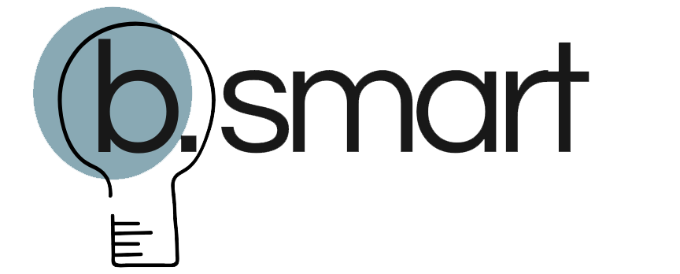
Meu objetivo é pegar na sua mão e te ajudar a se destacar nos processos seletivos que quer participar, rumo a dar seus primeiros passos no mercado de trabalho.
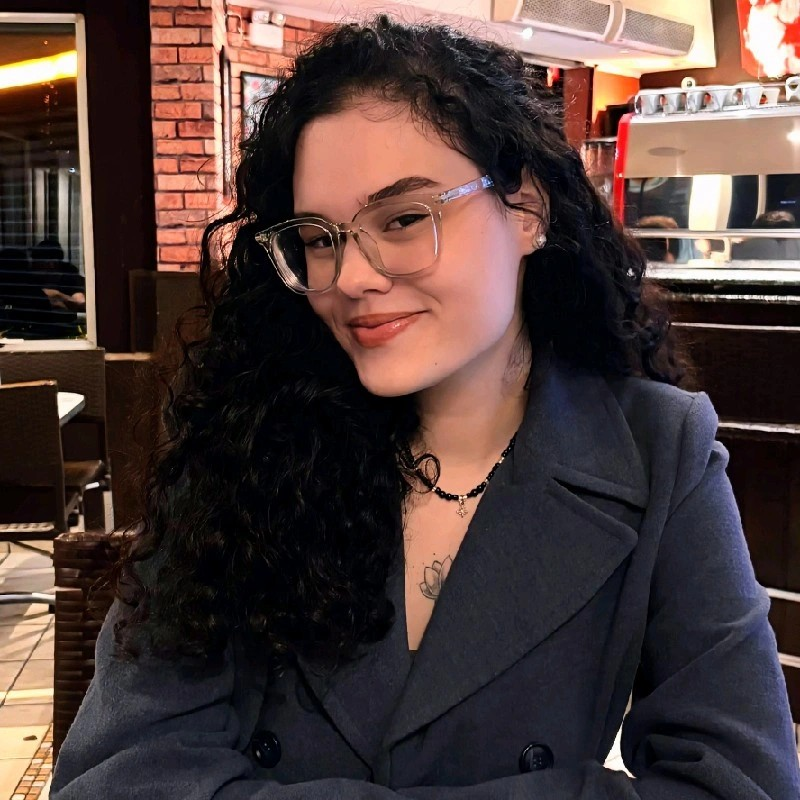
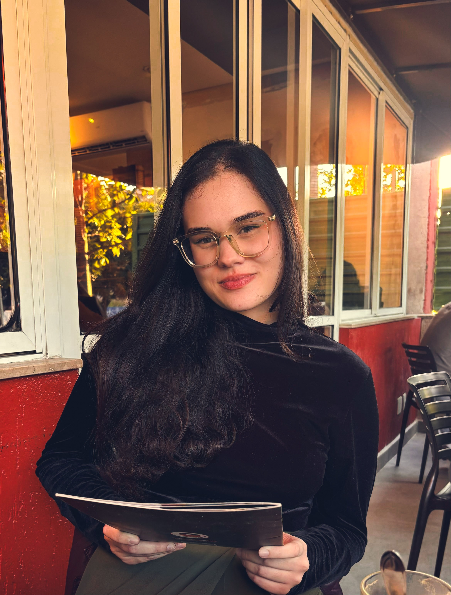
Te mostro como gerar valor na sua trajetória profissional. Com uma análise personalizada das suas experiências, crio do zero um currículo que vai ser muito mais do que um documento, mas sim um passaporte para as vagas do seu interesse.
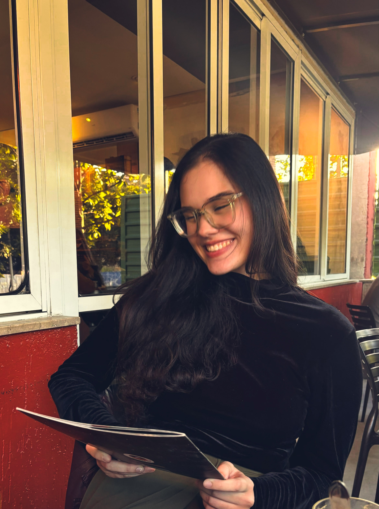
É sobre saber se vender. A partir de uma mentoria de 1 hora comigo, vamos passar por todas as estratégias necessárias das principais etapas dos processos seletivos, rumo em criar convicção de que você é o candidato ideal para a vaga.
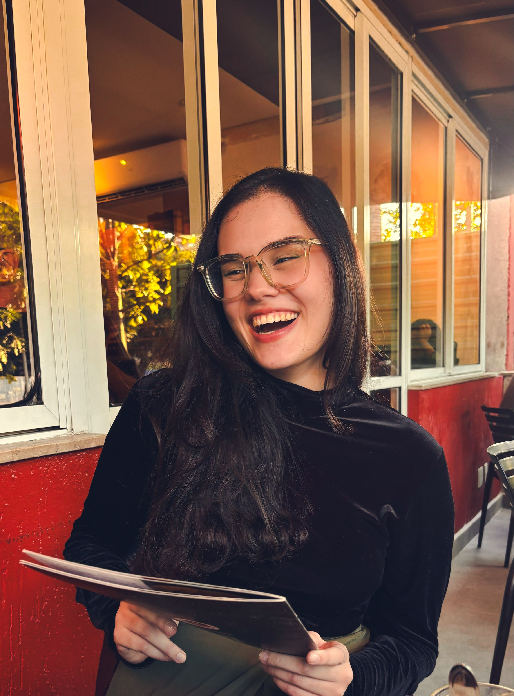
Mais que uma rede social, o LinkedIn é a principal porta de entrada para vagas. Saiba como valorizar seu perfil e utilize as estratégias que te farão chamar atenção dos recrutadores da rede, a partir de uma análise personalizada feita por mim.
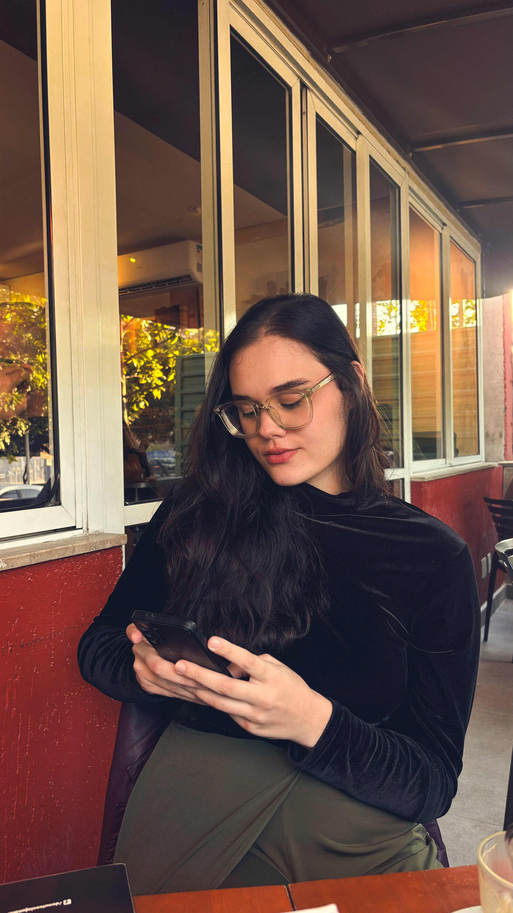
O Currículo de Impacto e análise de LinkedIn Estratégico reunidos em um kit com o melhor dos dois mundos: estratégia que emprega e preço acessível.
Olá! Eu sou a Bruna — mentora de carreira focada em jovens que estão dando os primeiros passos rumo ao mercado de trabalho.
Minha jornada começou cedo: aos 20 anos, iniciei meu estágio em RH em uma agência, depois de já ter atuado em projetos de extensão na faculdade e em uma ONG internacional de intercâmbios. Foi nesse meio tempo que descobri minha paixão por pessoas, processos seletivos e pelo mundo corporativo.
A grande virada veio quando conquistei uma vaga em um programa de estágio disputado por meio da Gupy e entrei em uma multinacional, onde atuei por quase dois anos e me desenvolvi como profissional de Recursos Humanos. Essa experiência me transformou — e é esse olhar de dentro do RH que hoje aplico nos serviços que ofereço.
Com base em tudo o que aprendi (ainda jovem e enfrentando os mesmos desafios que você talvez esteja enfrentando agora), criei uma mentoria prática, humana e estratégica para te ajudar a conquistar sua primeira vaga e impulsionar o início de sua trajetória profissional.
Graduação em Relações Públicas pela Unesp Bauru, com atuação em projetos de extensão corporativos.
Vivência em RH com foco em recrutamento e seleção, desenvolvimento organizacional, diversidade e inclusão e comunicação interna.
Atuação na área de comunicação interna na Embraer em apoio às áreas especialistas e mentoria de carreira para jovens profissionais no mercado de trabalho.
Otimização de currículos alinhados ao mercado de trabalho atual.
Sessões práticas para desenvolvimento de marca pessoal, plano de carreira e comunicação eficaz.
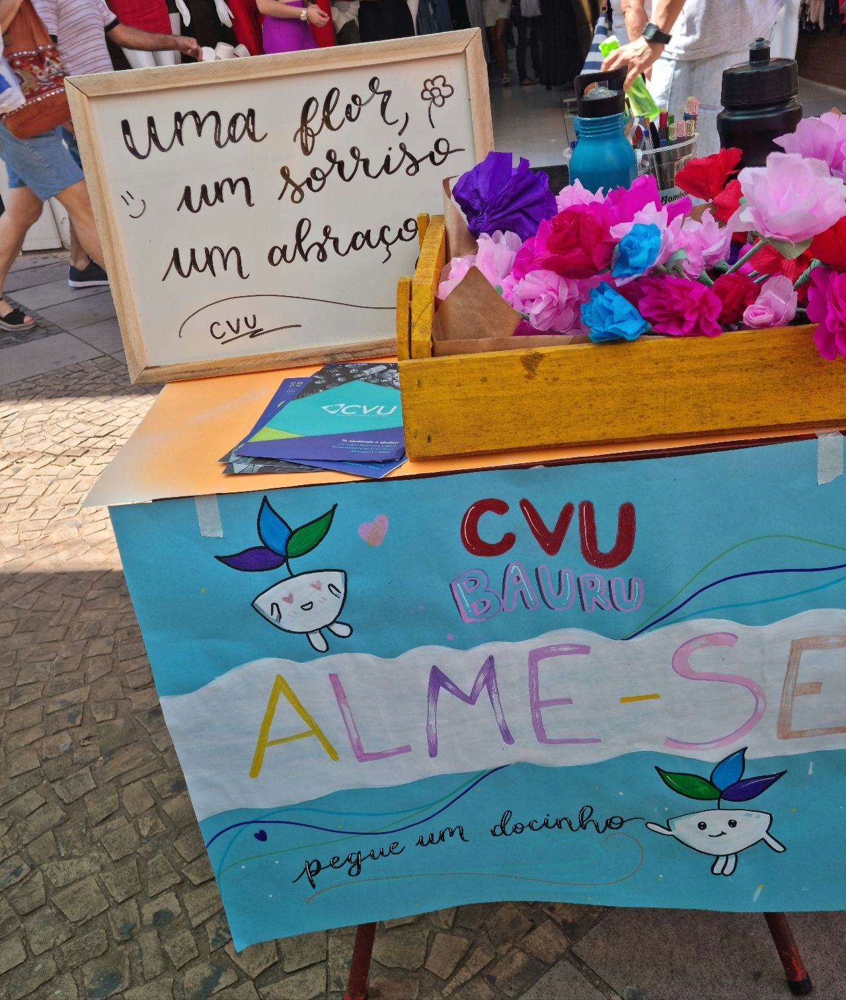
Idealização de eventos voltados ao início da carreira, com temas como branding pessoal, entrevistas e networking.
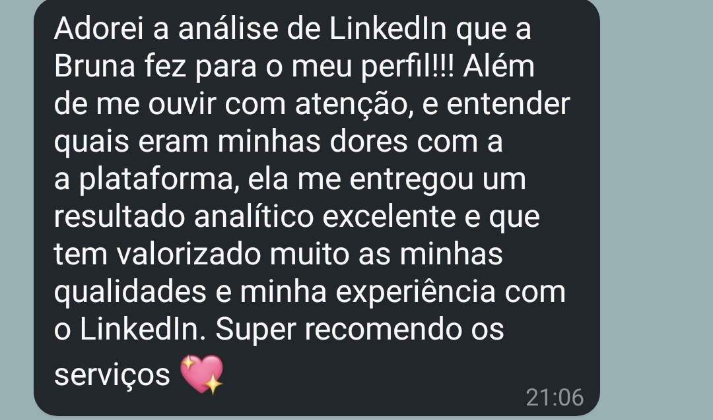
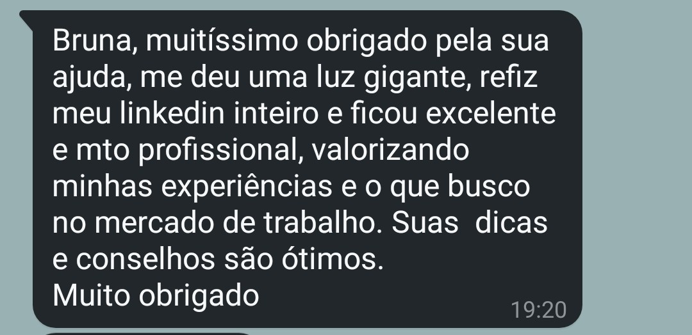
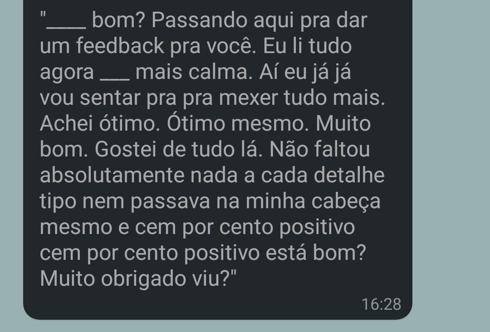
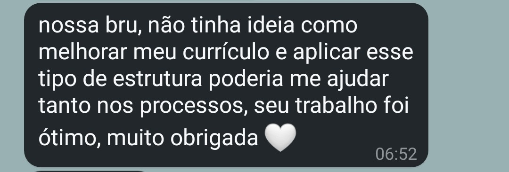
O prazo padrão é de até 5 dias úteis após o recebimento de todas as informações necessárias. Mas sempre tento agilizar ao máximo!
Você agenda um horário comigo, e durante 1 hora analisamos juntos seu perfil, seus objetivos e traçamos estratégias práticas para destacar sua candidatura.
Sim! Após a análise personalizada, te envio orientações e sugestões claras para aplicar no seu perfil e te ajudar a atrair oportunidades.
Sim! Ele une dois serviços com um valor reduzido em relação à contratação separada. Ideal para quem quer começar com tudo!